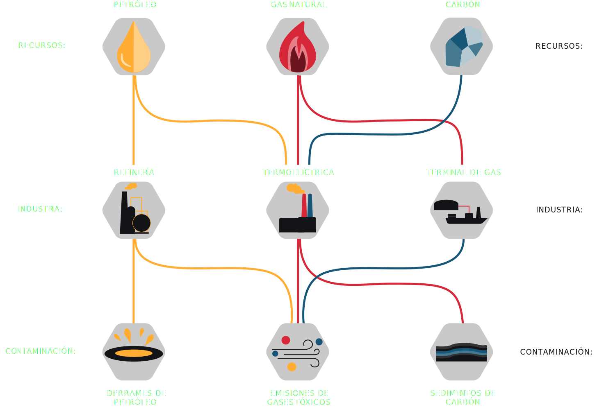

La alta concentración industrial en las zonas costeras de la Región de Valparaíso, aledañas a las comunas de Quintero y Puchuncaví, ha generado un devastador escenario ambiental que afecta directamente la salud de los habitantes de tales comunas. Las causas en su mayoría, han sido atribuidas a la presencia de gases tóxicos en el aire pero el problema es mucho más generalizado.
¿Cuales son las industrias?
En la actualidad, termoeléctricas, refinerías y terminales de gas componen el parque industrial de Quintero-Puchuncaví. A pesar de ser un área predilecta para la pesca, la agricultura y la ganadería, la bahía se ha convertido en el lugar perfecto para estas empresas. El plan regulador del área sumado a la falta de una estricta fiscalización permite la instalación de este tipo de proyectos.

"[La llegada de las industrias] causó los primeros movimientos, porque ya había noción de que las fundiciones generaban daños ambientales. La zona de Quintero y Puchuncaví tenía destino pesquero, agrícola y turístico, entonces había mucha preocupación"
Impactos en el medioambiente
Las industrias que se han asentado utilizan los recursos de la zona y además presentan un riesgo de distintos tipos de contaminación. Tanto aire, mar y suelo se han visto afectados por las emisiones y desperdicios de estas empresas.

Emisiones tóxicas
MP10: Material particulado de diámetro menor a 10 μm
MP2,5: Material particulado de diámetro menor a 2,5 μm
SOx: Óxidos de azufre
NOx: Óxidos de nitrógeno
“Estamos molestos, porque está claro que el primer objetivo del Gobierno ha sido mantener el parque industrial por sobre la vida y salud. Acá lo político ha pesado mucho más que lo humano y lo ético”
Evolución calidad del aire
"Nos molestan e indignan los numerosos y frecuentes eventos de escape de gases que han puesto en riesgo a nuestros niños y todos los que habitamos Quintero y Puchuncaví, desde hace muchos años, y especialmente en estos 8 meses del año en curso, en que hemos sufrido 25 varamientos de carbón, 26 peak de SO2, 2 derrames de petróleo y ahora esta gravísima intoxicación masiva de menores de edad"
Efectos en la salud


MPx
Pulmonar: Inflamación bronquial, esto tiene como consecuencia el desarrollo de infecciones respiratorias bajas (neumonía, bronquitis) y crisis obstructivas.
La exposición crónica a material particulado tiene un efecto en el aumento de la mortalidad por cáncer broncopulmonar.
Cardiovascular: Causa una contracción de las arterias lo cual puede provocar obstrucción por un coágulo y el consiguiente infarto cerebrovascular o del miocardio circulatorio.
SOx
Pulmonar: Aumenta la frecuencia cardíaca, disminuye el volumen respiratorio y aumenta la frecuencia respiratoria puede llegar a obstaculizar la respiración.
NOx
Cabeza y pulmones: Dificultan el transporte de oxígeno a los pulmones, afectando también el sistema nervioso central y el riñón.
Estómago: Causa una inflamación intestinal intensa, afectando principalmente el colon y causando diarrea y vómitos.
Embarazos: Posibles deformaciones y mutaciones, además de generar enfermedades respiratorias.
Cuerpo completo: Es un carcinógeno para diversos órganos y en especial causa leucemia.
“Nos evacuaron por un aire tóxico, y eso es el colmo porque perdemos nuestros derechos de estudiar, el derecho de los profesores de enseñarnos, de los trabajadores que pierden su trabajo por no estar ahí, por irse a sus casas por el aire sucio, cochino, que nos están tirando las empresas. Tengan conciencia de nosotros, somos el futuro”
Desafíos para una nueva Constitución.
Tratados Internacionales
Firmar el Acuerdo de Escazú aseguraría un mayor nivel de participación y consulta a las personas
en ámbitos referidos al medio ambiente. Además, esto supondría una base legal internacional
en la redacción de la Constitución de la República, junto con favorecer las economías locales,
en base a los informes del Panel Intergubernamental del Cambio Climático (IPCC).
Derecho a la salud
Integrar la salud con un enfoque de bienestar social por sobre un enfoque subsidiario de privatización
en la Constitución aseguraría que el Estado de Chile entregue a la ciudadanía un acceso
libre e igualitario a las prestaciones de salud de manera gratuita y de calidad.
Visión medioambiental
Incluir al Medio Ambiente en los primeros artículos de la Constitución aseguraría que el Estado de Chile
tuviese una visión medioambiental, ya que, la protección de la naturaleza se entendería mejor,
y tendría un alcance más amplio y significativo.
Propiedad de los bienes comunes
Modificar la jerarquía en la propiedad de los bienes descritos en la Constitución por una en la que
el derecho del bien común sea más importante que el derecho a la propiedad privada aseguraría
que los ecosistemas en Chile se siguieran respetando independientemente de lo que ocurra alrededor,
teniendo un manejo sostenible y un enfoque en la preservación.
Medio ambiente sano
Establecer en la Constitución el derecho al medio ambiente sano y una protección al paisaje como
valor cultural y simbólico aseguraría una base legal para incluir mayores escenarios de protección
al medio ambiente y las personas como la defensa ante contaminación lumínica, paisajísticas,
de tratamiento de basura, etc. (actualmente no consideradas).
Participación ciudadana
Proponer una mayor participación de los ciudadanos en decisiones que implican
asuntos ambientales en la Constitución aseguraría que el Estado de Chile respete a la ciudadanía en
procesos de desarrollo sustentable, al pensar los límites de la naturaleza en la economía.